Компьютерная система, которой не существует, —
и которая работает прямо в браузере.
Автор: Степан · 2026 год
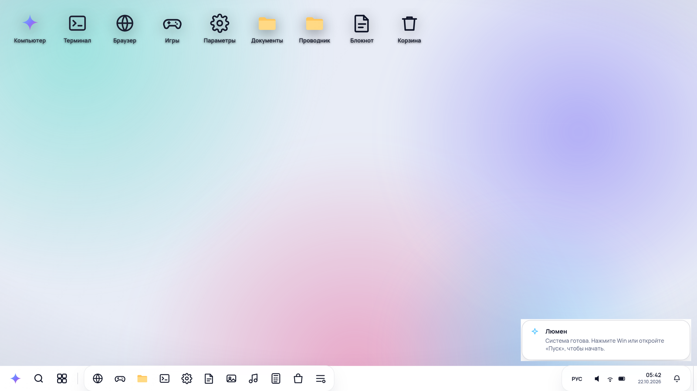
Обычная система — это много программ, которые занимают место на диске. Я поставила другую задачу: сделать систему, которой нет ни на одном компьютере, но которой можно пользоваться.
Открыл ссылку — и работаешь. Ничего не надо ставить.
Всё написано вручную: разметка, оформление и логика.
Русский язык, стекло, северное сияние, две темы.
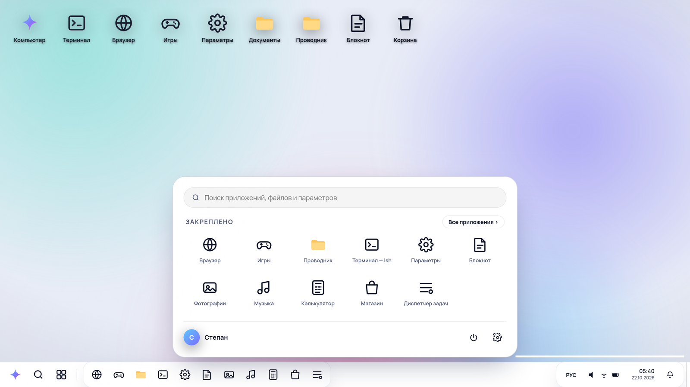
Разметка экранов и окон
Стекло, свечение, две темы
Окна, папки, файлы
16 приложений и 5 игр
Снимки экранов, читаемость
Три шага — как у настоящего компьютера. Кнопки «Пропустить» здесь нет: запуск идёт по-честному.
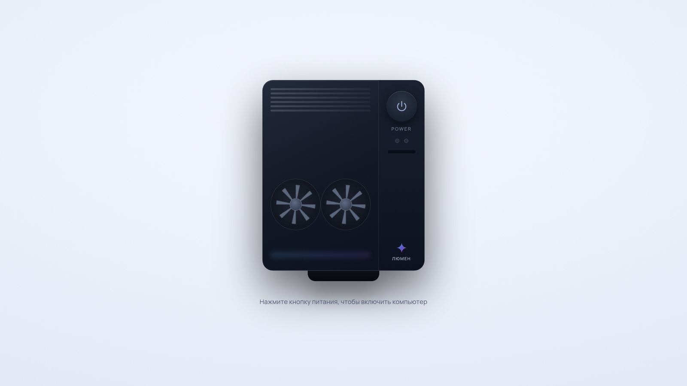
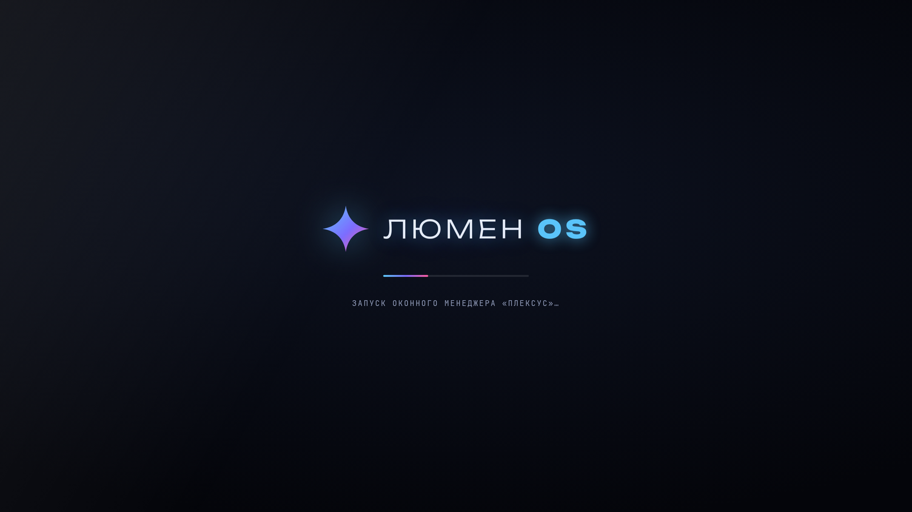
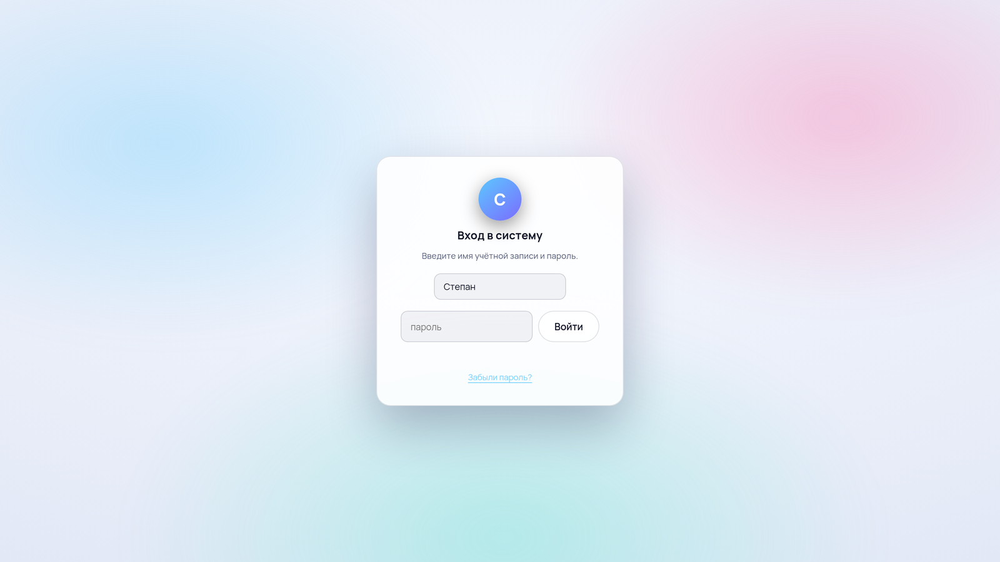
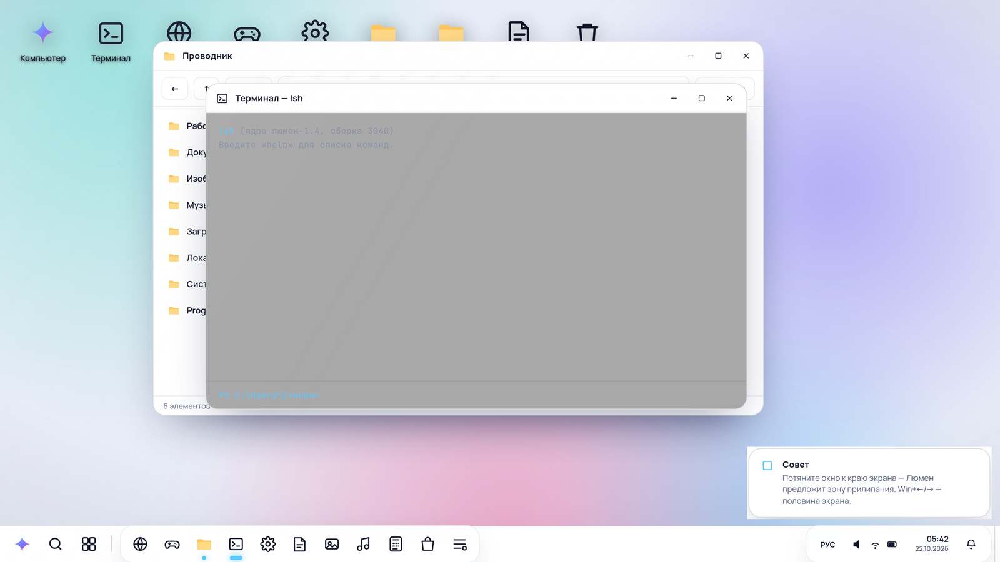
Двигаются, сворачиваются, растягиваются и прилипают к краям экрана.
Тёмная — для вечера, светлая — для дня. Переключаются одной кнопкой.
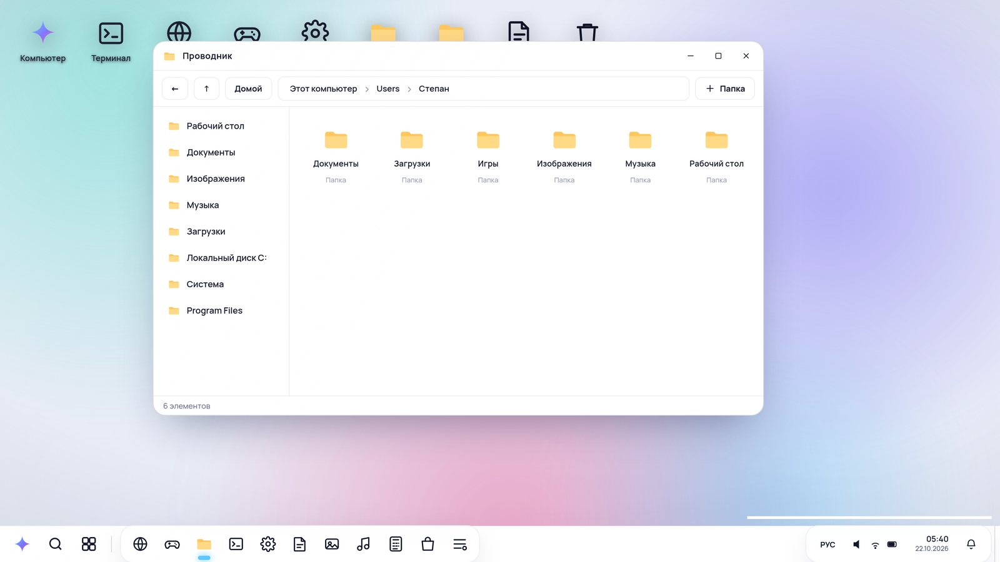
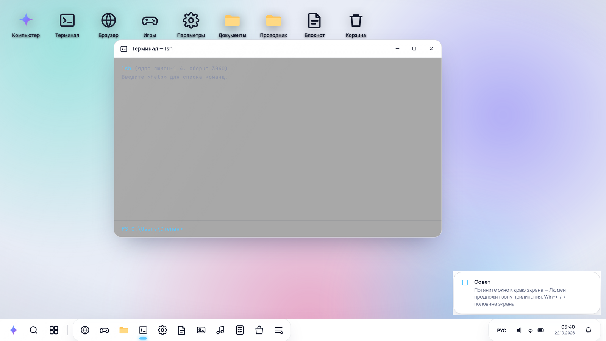
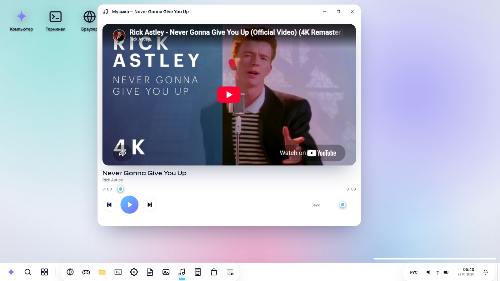
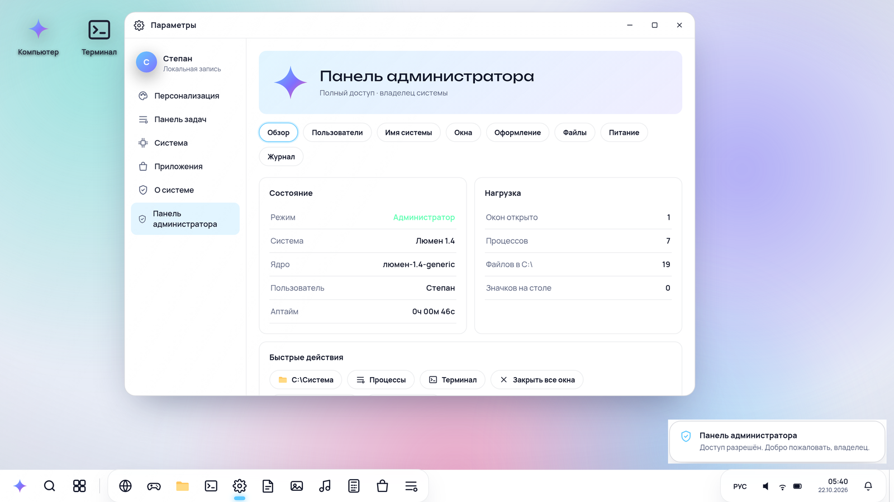
16 приложений: проводник, терминал, блокнот, калькулятор, музыка, календарь, почта, браузер, галерея, редактор рисунков, игры, диспетчер задач, защита, магазин и параметры. Ещё пять игр: «Змейка», «Тетрис», «Понг», «Арканоид» и «2048».
Пароль не хранится открытым текстом — от него остаётся только отпечаток. Панель администратора открывается отдельным кодом владельца.
Вопрос: «Нужна ли, по-вашему, такая компьютерная система?»
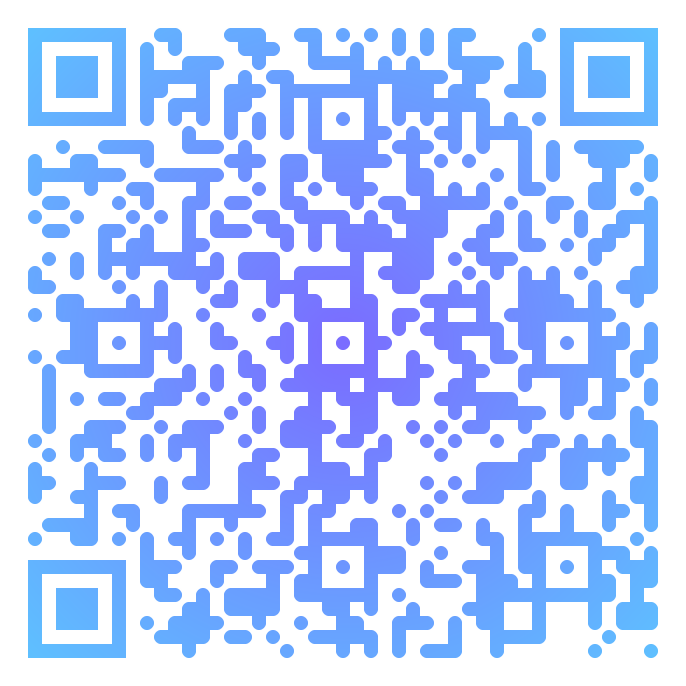
Наведите камеру телефона —